Chaohui Yu
DAMO Academy, Alibaba Group
Chaohui Yu is an AI researcher at DAMO Academy, Alibaba Group. He received his M.S. degree in Computer Science from the Institute of Computing Technology (ICT), Chinese Academy of Sciences in 2020, and his B.E. degree from Shandong University in 2017. His research interests span Representation Learning, Perception, Multimodal learning, and Visual generation. He has published papers at top-tier venues including CVPR, ICCV, ECCV, NeurIPS, SIGGRAPH/Asia, ICLR, ACM MM, and AAAI. He serves as a reviewer for CVPR, ICCV, ECCV, SIGGRAPH/Asia, NeurIPS, ACM MM, AAAI.
News
- Apr 2026 One paper accepted to SIGGRAPH 2026!
- Nov 2025 Two papers accepted to AAAI 2026!
- Sep 2025 One paper accepted to NeurIPS 2025!
- Aug 2025 Two papers accepted to SIGGRAPH Asia 2025!
Selected Publications
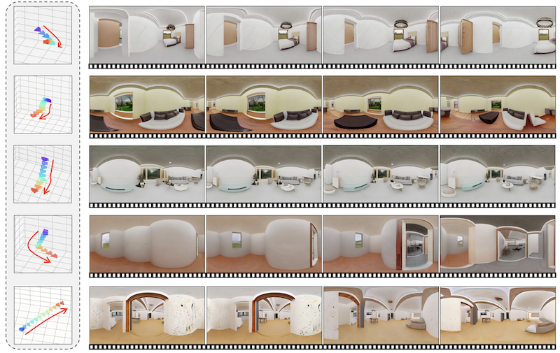
CamPVG: Camera-Controlled Panoramic Video Generation with Epipolar-Aware Diffusion
SIGGRAPH Asia 2025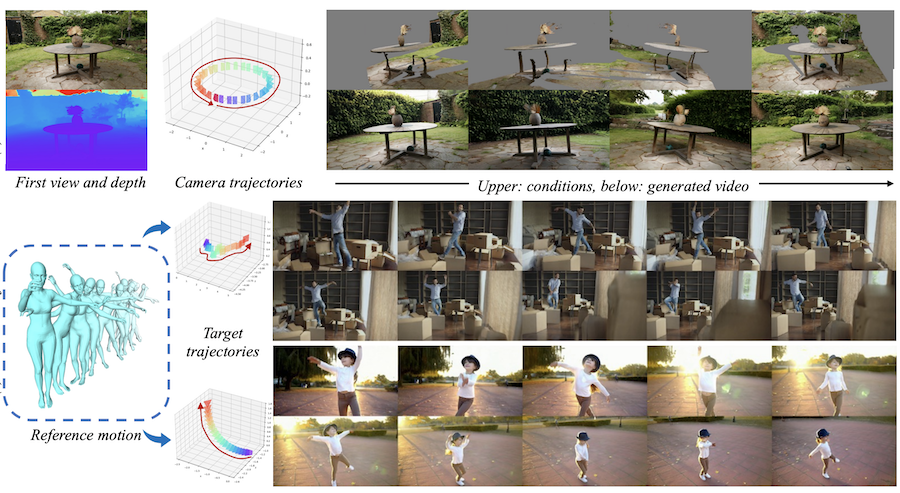
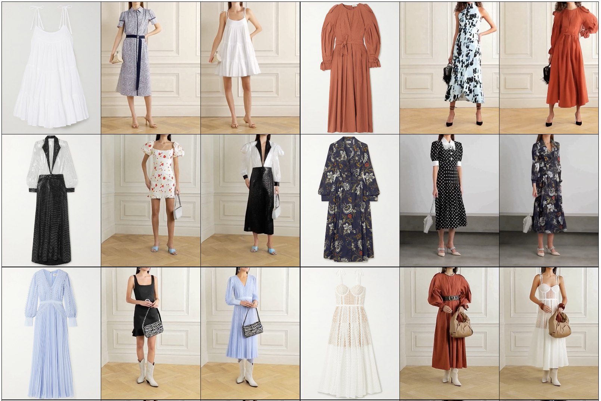
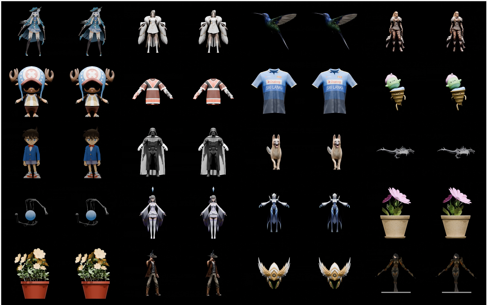
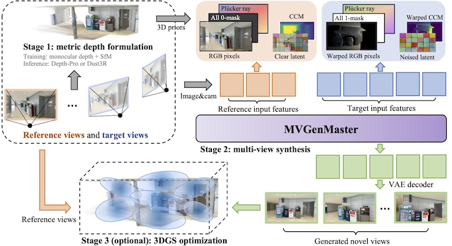
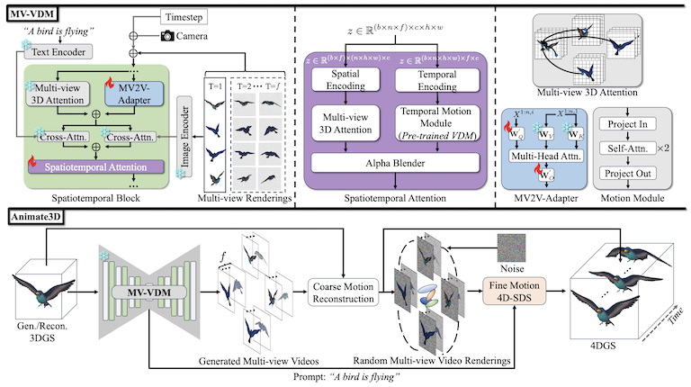
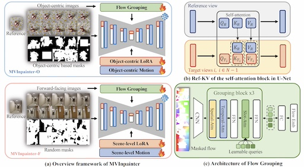
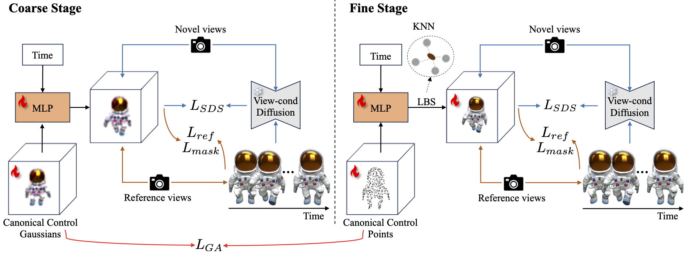
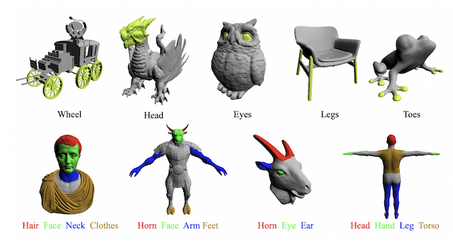
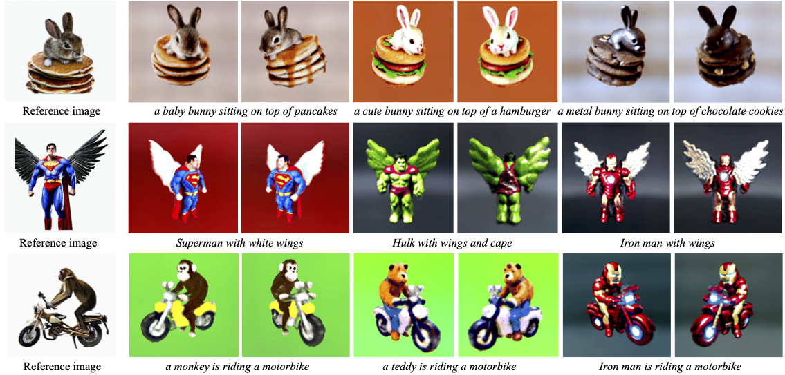
Points-to-3D: Bridging the Gap between Sparse Points and Shape-Controllable Text-to-3D Generation
ACM MM 2023
RegionBLIP: A Unified Multi-modal Pre-training Framework for Holistic and Regional Comprehension
Preprint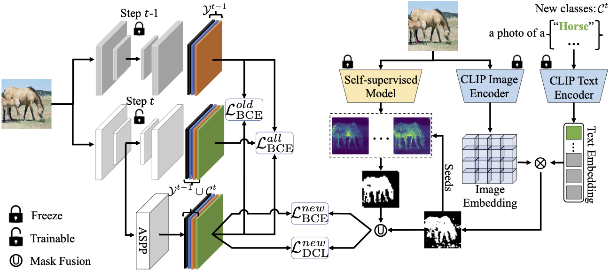
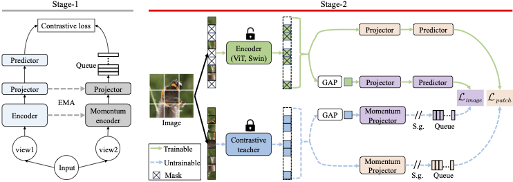
Education & Experience
Awards & Honors
Academic Service & Talks
Conference Reviewer
CVPR, ICCV, ECCV, BMVC, SIGGRAPH, SIGGRAPH Asia, NeurIPS, ACM MM, AAAI
Journal Reviewer
TCSVT, JCST
- China3DV 2025: [Link]